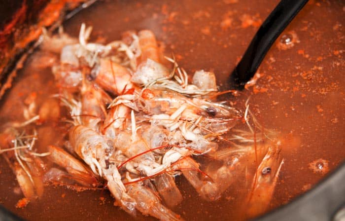

Comment faire du bouillon de crevettes - Bouillon de crevettes
Le bouillon de crevettes ou bouillon de crevettes est l'un des ingrédients essentiels lors de la cuisson avec des fruits de mer. La saveur et l'arôme de cette préparation valent de l'or.
L'idée de ce bouillon est de l'utiliser comme substitut de l'eau dans les recettes de poissons et crustacés qui en ont besoin. Et je précise: vous pouvez utiliser à la fois pour les préparations avec des crevettes, ainsi que pour les calmars, les crevettes, les moules, les palourdes, etc.
Vous pouvez également l'utiliser pour la paella aux fruits de mer, les sauces aux fruits de mer pour le poisson, les soupes, les crèmes, etc.
Imaginez un plat de pâtes aux fruits de mer dont la sauce comprend une portion de ce bouillon de crevettes. Ou un risotto aux fruits de marque à la place de l'eau, utilisez ce précieux liquide. Avez-vous imaginé le goût? Eh bien, mettons-nous au travail!
Ingrédients
300 grammes de têtes et de peau de crevettes fraîches
1 litre d'eau
2 feuilles de laurier
1 pincée de sel
Préparation étape par étape
Mettez les têtes et la peau des crevettes dans une marmite profonde. Ajouter 1 litre d'eau, le sel et les feuilles de laurier.
Mettez le feu à puissance maximale, une fois qu'il commence à bouillir, baissez la température de moitié.
Après environ 25 minutes, retirer du feu. Passer le bouillon dans une passoire et c'est tout.
Autres méthodes
Il existe d'autres méthodes pour préparer ce bouillon. Certaines personnes font frire la peau et les têtes de crevettes dans du beurre avant de les faire bouillir, d'autres ajoutent un trait de vin, d'autres ajoutent de l'oignon, du céleri et de la ciboulette, du persil, des clous de girofle. Toutes ces options sont valables, et en fait, dans une école de cuisine, on vous dira de mettre de l'oignon, du céleri et de la ciboulette dans le bouillon.Bien que tous les ingrédients précédents soient les bienvenus et ajouteront de la saveur, ils ne sont pas impératifs pour faire un bon bouillon de crevettes. Je le fais comme expliqué ici et le résultat est magnifique.
